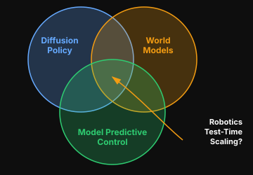

Can world models improve diffusion policies?
Investigates whether diffusion policies, model predictive control, and world models combine into test-time scaling for robotics — especially when you’re stuck with limited compute that results in a mediocre fine-tuned base policy.